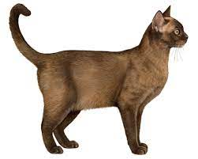
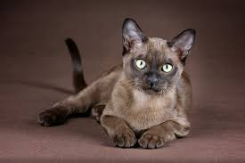
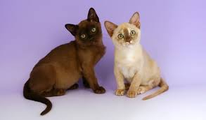
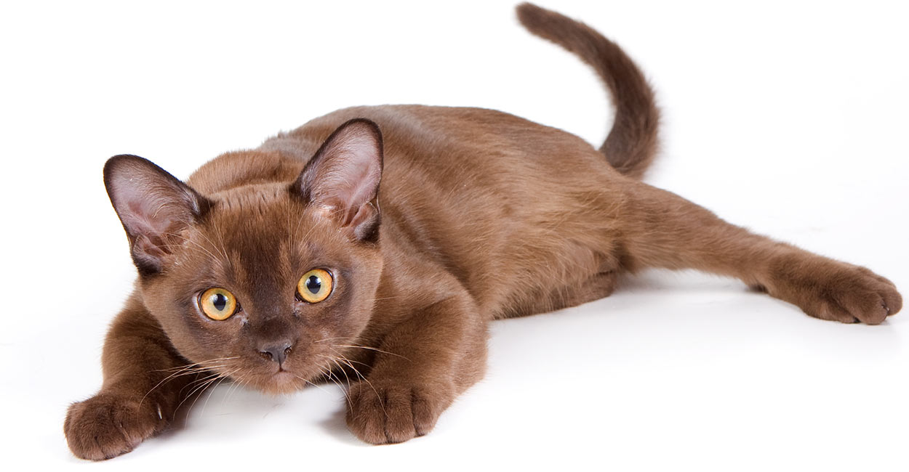

Cute Cats |




|
Home
British Shorthair
Burmese
|
Many say that Burmese are amusing, playful, and super-smart, the perfect interactive cats for the home —or any place people are in need of love and amusement. Devoted, loving cats, Burmese are often loyal and people-oriented. Burmese will give you unconditional love even when you are not your most loveable.
Burmese seem to never grow up; they are as entertaining at 16 weeks as they are at 16 years. These streaks of brown lightning love to perform animated antics for your amusement and theirs. Full of high-spirited playfulness, they love to entertain their families by performing daring leaps to the top of the bookcase, pausing only to make sure their audience is watching. If their antics go unnoticed, they hop right down and fix you with an unflinching stare, demanding attention. Burmese are a very determined breed, and will win just about any battle of wills.
There may be temperament differences between adult males and females. Females are intelligent, highly curious, active, and deeply emotionally involved with their human companions. Males are wholly devoted to their humans too, but are a bit more moderate in temperament. After a game of fetch or hide and seek (they hide, you seek), they like to lounge about, usually on top of what ever you’re doing. The only issue about which they are passionately concerned is the selected cuisine and how soon it will be served. |
Burmese |
Like its Siamese cousin, the Burmese cat is vocally expressive and thrives in households that don't mind lots of meowing. Named the national cat of Russia, the Siberian breed is not only one of the most talkative cats but it's also among the largest. |
The Burmese cat is a breed of domestic cat, originating in Burma, believed to have its roots near the Thai-Burma border and developed in the United States and Britain. Most modern Burmese are descendants of one female cat called Wong Mau, which was brought from Burma to America in 1930 and bred with American Siamese. |
They are notoriously loving, affectionate and highly sociable. So much so, they've earned themselves a reputation as being one of the friendliest cats around, and are even said to have a 'dog like' personality. They get along well with children and other pets, too. |
The Burmese as we know and love it today can be traced back to a single female domestic cat named Wong Mau. In 1930, Wong Mau was transported into the United States from Rangoon, Burma (now Yangon, Myanmar), by Dr. Joseph Thompson of San Francisco. As the story goes, an unnamed sailor gave the feline to Dr. Thompson, who brought her home to the City by the Bay. Wong Mau was a small, fine-boned cat with a compact body, a rounded, short-muzzled head, round eyes set far apart, and a short, walnut-brown coat with darker brown on her face, ears, feet, and tail. The actual look of the Burmese has changed over time, achieving the diversity and current appearance through the years. Almost thirty years ago, two distinct head types emerged: the Contemporary Burmese and the European Burmese. |
The Burmese is highly intelligent, affectionate and extremely loyal. They love being with people, but also gets along well with other cats and even dogs. One of their most endearing qualities is that they love to perform tricks. They readily learn to retrieve a toy in a very dog-like manner and earned the nickname "dog-cat" when they first appeared. Although their voice is softer than the Siamese, the Burmese is a talkative cat quite prepared to hold long conversations with their owners. |
Burmese cats look like they are always alert and aware of what’s going on. They seem to be in tune with their surroundings because they have such wide, bright eyes and tall, forward-facing ears.
Their bodies are compact and medium in size. Burmese cats are not overly large, but they are muscular and strong, which can add to their overall weight. They have sleek coats that help them appear smaller. So, you might be caught off guard when you pick up your Burmese and feel their dense weight.
Their coats are short and straight, and come in four colors: sable, platinum, blue, and champagne. They might have slightly darker faces, ears, paws, and tails, but most Burmese cats are one solid color. Their eyes are typically golden, sometimes tinting green in the sun. |
Created by Iren V |
2023, all rights reserved |